Audience
Cashiers, supervisors, front-of-house staff, takeaway teams, managers, customer service, and kitchen/expo operators.
Hospitality operations manual
This documentation explains the core sales, customer, table, refund, delivery, promotion, reservation, and kitchen workflows visible in the supplied ZentraPOS screens. It is written for end users, not developers, with a focus on what each screen does, when to use it, and what operational result to expect.
Cashiers, supervisors, front-of-house staff, takeaway teams, managers, customer service, and kitchen/expo operators.
Help end users understand what each screen does, when to use it, and what operational outcome to expect.
Hospitality venues running counter service, dine-in, takeaway, reservations, delivery integrations, loyalty, and kitchen prioritization.
ZentraPOS reduces clicks and simplifies daily operations, helping staff serve customers faster with minimal training.
The main POS screen is the primary workspace for cashiers and front-of-house staff. It combines category browsing, product selection, cart review, and payment entry in one place so orders can be created and completed quickly during service.
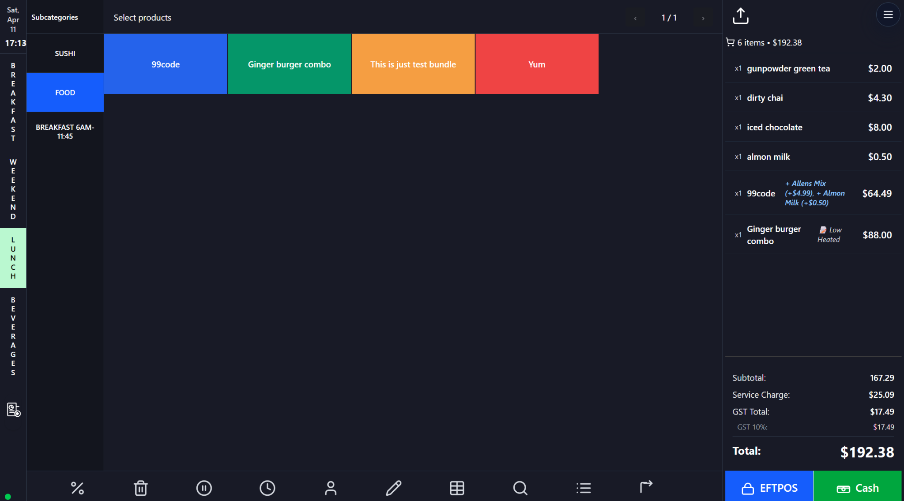
| Area / control | Detailed function |
|---|---|
| Left day-part rail | Switches between major menu periods such as Breakfast, Lunch, and Beverages. This helps venues present the right menu based on time of day. |
| Subcategory column | Narrows the active menu into smaller groups such as Sushi, Food, or Breakfast service windows. |
| Product tile grid | Large touch tiles add products rapidly. The color-coded layout is designed for speed on tablets and touch screens. |
| Cart panel | Shows line items, quantities, prices, and modifiers already added to the sale. |
| Totals summary | Displays subtotal, service charge, GST, discounts, and the final total before payment. |
| Bottom action bar | Provides shortcut access to discounting, cart editing, hold, timers, customer tools, notes, table tools, search, and workflow actions. |
| Payment buttons | Launches EFTPOS or Cash tendering directly from the order screen. |
The Quick Actions menu acts as the operations hub for tasks that sit beside normal selling. It gives staff rapid access to refunds, held carts, table tools, delivery integrations, receipt reprints, service charge settings, customer management, and promotional controls.
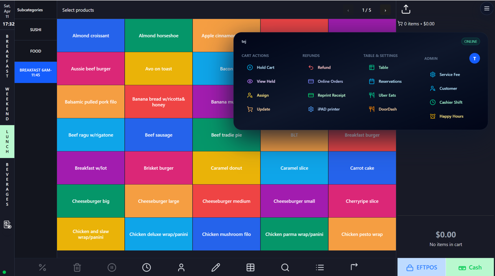
| Area / control | Detailed function |
|---|---|
| Cart actions | Hold Cart, View Held, Assign, and Update are used while the sale is still active and needs to be paused or changed. |
| Refund tools | Launches refund processing, online order review, receipt reprint, and printer-related tasks for completed sales. |
| Table & settings | Provides access to table view, reservations, and delivery partner order creation for dine-in venues. |
| Admin actions | Contains higher-permission tools such as Service Fee, Customer, Cashier Shift, and Happy Hours. |
| Online indicator | Shows device connectivity status, which is useful when diagnosing sync or integration issues. |
The payment window finalizes the sale. It supports multiple tender types and provides a fast tendering keypad with common denomination buttons, live tendered totals, and change calculation.
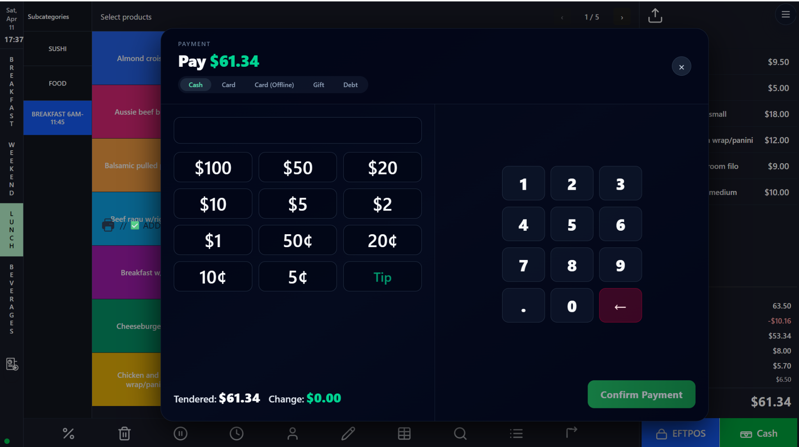
| Area / control | Detailed function |
|---|---|
| Tender tabs | Cash, Card, Card (Offline), Gift, and Debt allow the same sale to be settled through different business-approved methods. |
| Tender field | Accepts the amount received from the customer and updates the change calculation. |
| Denomination buttons | Speeds up cash handling by allowing common note and coin values to be tapped instead of typed. |
| Numeric keypad | Supports exact entry when the customer gives an unusual amount or when partial tenders are being recorded. |
| Tendered / Change summary | Shows exactly how much has been entered and how much change is due. |
| Confirm Payment | Completes the sale and writes the chosen tender type into sale history and reporting. |
The refund screen is used after a sale has already been completed. It targets a specific receipt, lets staff select the item quantities to return, and preserves the original payment context for audit accuracy.

| Area / control | Detailed function |
|---|---|
| Sale reference | Displays the sale number so the operator can verify the exact transaction being refunded. |
| Refund location | Supports multi-site environments where reporting or stock treatment depends on location. |
| Line item refund grid | Shows original quantities, refund quantities, and line prices for precise partial refunds. |
| Original payment breakdown | Displays how the customer originally paid, reducing the chance of mismatched refund methods. |
| Refund method selector | Lets staff choose how the money will be returned. |
| Refund summary | Calculates the refund total and any service charge refund before final confirmation. |
Receipt Reprint gives staff a quick way to recover proof of purchase after the original receipt is lost, faded, or failed to print correctly.

| Area / control | Detailed function |
|---|---|
| Recent receipts list | Shows the last receipts with date, time, tender type, and total for quick selection. |
| Receipt number lookup | Lets staff retrieve a specific record when the receipt number is known. |
| Receipt preview | Provides confidence before printing by showing item and total details of the selected receipt. |
| Reprint button | Sends the selected receipt to the configured printer. |
Product Search is a fast retrieval tool for large or complex menus. It reduces time spent browsing by letting staff search by text, filter by category, sort results, and limit by price range.

| Area / control | Detailed function |
|---|---|
| Search bar | Performs live product lookup as staff type. |
| Category filter | Restricts results to a selected menu group. |
| Sort controls | Sorts by name or other configured fields, with ascending or descending order. |
| Price range filters | Limits results to a known price band when staff do not remember the exact name. |
| Result cards | Show product name, price, internal code, and a quick add button. |
| Keyboard hints | Useful for power users on desktop or iPad keyboard setups. |
This screen controls how surcharges or service fees are applied. It supports automatic weekend charging and manual overrides for public holidays, special events, or management exceptions.
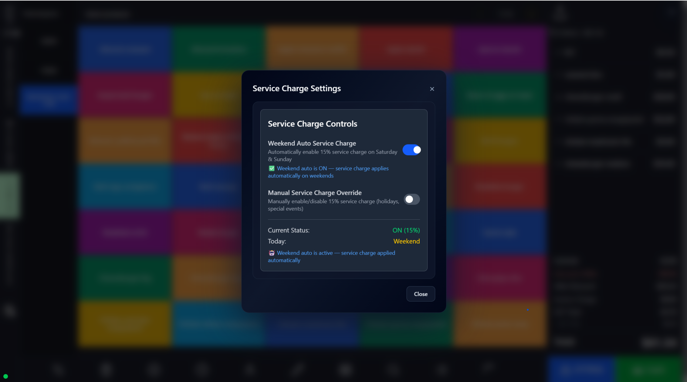
| Area / control | Detailed function |
|---|---|
| Weekend Auto Service Charge | Automatically applies the configured surcharge on Saturday and Sunday. |
| Manual override | Allows authorized staff to force service charge on or off outside the automatic rules. |
| Current status display | Shows whether the surcharge is active and the percentage currently being applied. |
| Today indicator | Explains why the rule is active, such as the current day being a weekend. |
The split-pay workflow lets staff divide a bill between guests by selecting specific cart lines and settling only those lines first. This is more accurate than manually calculating per-person amounts.

| Area / control | Detailed function |
|---|---|
| Selection checkboxes | Mark which line items belong to the current payer. |
| Split Pay button | Starts payment for the selected items only. |
| Cancel Split | Returns the cart to normal mode if the selection was incorrect. |
| Live totals panel | Recalculates subtotal, service charge, GST, and total for the selected portion. |
Table View provides a floor-plan-style interface for dine-in operations. It helps hosts and servers identify available tables, active tables, guest assignments, and floor sections at a glance.

| Area / control | Detailed function |
|---|---|
| Area tabs | Switch between Floor-1, Floor-2, Outside, Leftside, Downstairs, Rooftop, and other configured seating areas. |
| Table tiles | Represent physical tables with table number, chair count, guest name, and live status. |
| Busy / Active indicators | Highlights tables with open orders so staff do not seat new guests by mistake. |
| Merge Tables button | Starts a workflow to combine tables for large groups. |
Table Merge Mode extends the normal table screen by allowing multiple tables to be combined into one service area or bill. This is especially helpful when parties expand or are relocated.

| Area / control | Detailed function |
|---|---|
| Selected table highlights | Shows exactly which tables are being combined. |
| Merge Selected | Confirms the merge once the correct tables have been chosen. |
| Cancel Merge | Stops the merge if the wrong tables were selected. |
This screen converts the current POS cart into an Uber Eats delivery request. The cart contents are reused and staff only need to add delivery-specific customer and drop-off information.
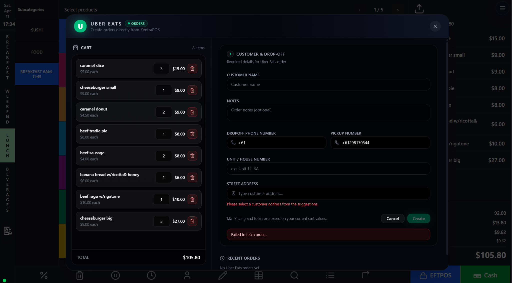
| Area / control | Detailed function |
|---|---|
| Cart panel | Shows the items and quantities being sent to the delivery workflow. |
| Customer name and notes | Captures the recipient name and operational comments for the delivery. |
| Drop-off / pickup phone fields | Supports coordination between store, courier, and customer. |
| Address fields | Collect unit, house number, and street address, often with validation. |
| Create button | Submits the delivery request once required fields are complete. |
| Recent orders area | Provides visibility into previously created Uber Eats orders. |
This screen links an active cart to an existing customer profile. It combines fast search with a portfolio preview so staff can confirm loyalty points, reward eligibility, and customer identity before attaching the sale.
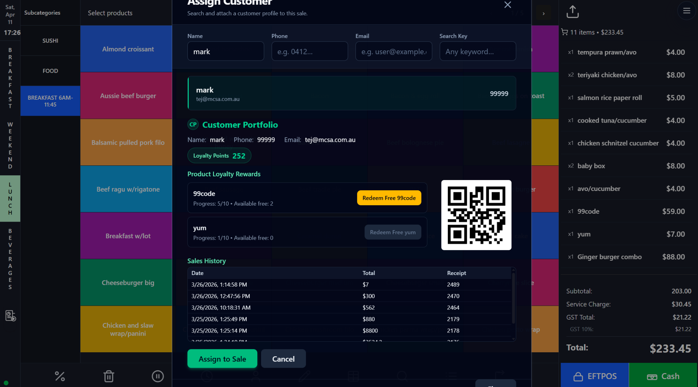
| Area / control | Detailed function |
|---|---|
| Search filters | Find customers by name, phone, email, or search key. |
| Matched customer list | Displays candidate records based on the search. |
| Customer portfolio | Shows selected customer details, points, and profile summary. |
| Product loyalty rewards | Highlights reward progress and redeemable items. |
| QR code | Acts as a scannable customer or loyalty identifier depending on configuration. |
| Sales history | Shows prior receipts and spend activity before assignment. |
| Assign to Sale button | Attaches the selected customer to the current cart. |
Update Cart Items provides a focused editing view for current order lines. It is especially useful when the cart has many items and staff need to change quantities or remove lines without working directly in the busy main order screen.
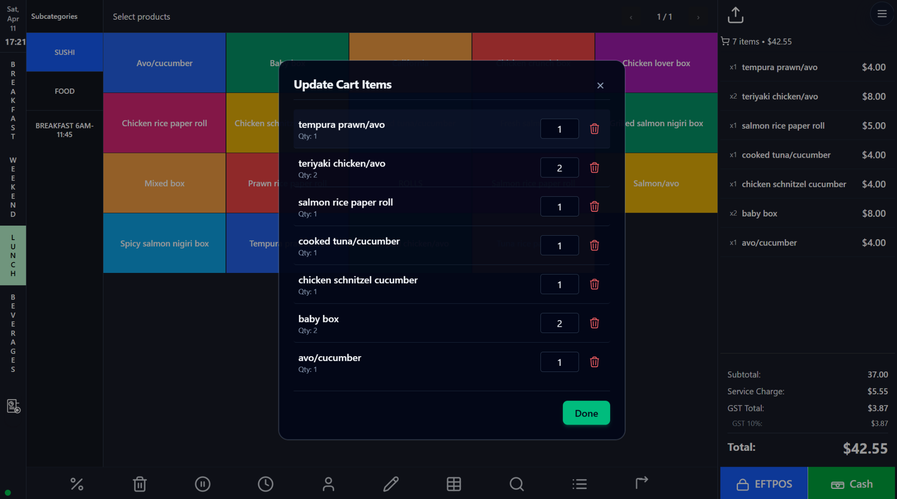
| Area / control | Detailed function |
|---|---|
| Item list | Displays each active line in the cart. |
| Quantity fields | Allows fast correction of line quantities. |
| Delete icons | Removes individual lines completely. |
| Done button | Saves changes and returns to the main order screen. |
This page is the main customer relationship workspace. It combines search, results, profile details, address data, loyalty balances, discount entitlements, status badges, and sales history in one management view.
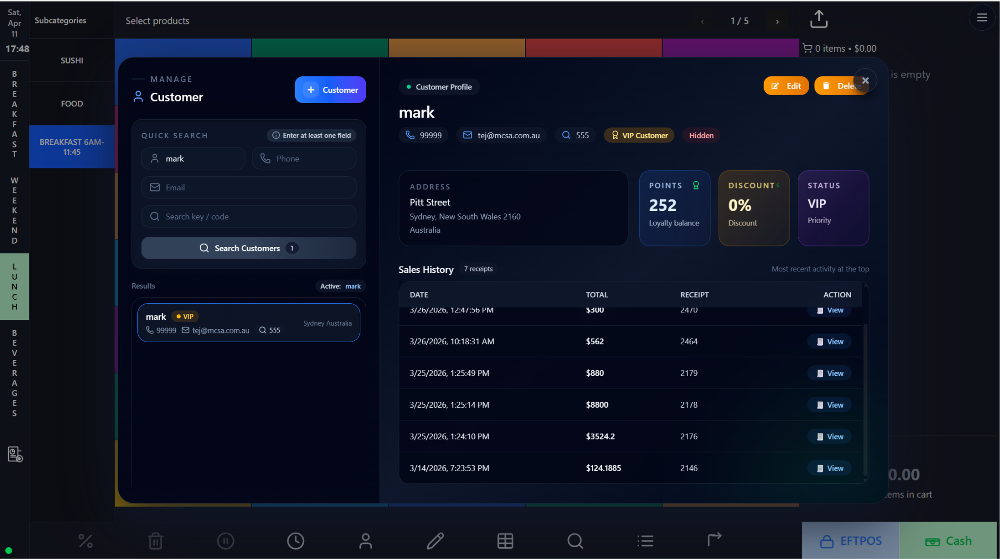
| Area / control | Detailed function |
|---|---|
| Quick Search panel | Searches by name, phone, email, or code. |
| Create Customer button | Opens the workflow to add a new customer record. |
| Results list | Shows matching customers with badges such as VIP. |
| Profile header | Displays the selected customer's primary identifiers and tags. |
| Address card | Stores location details useful for contact or delivery context. |
| Points / Discount / Status cards | Summarize loyalty balance, discount entitlement, and service tier. |
| Sales history table | Shows previous receipts and total spend to support customer service. |
| Edit / Delete buttons | Lets authorized staff maintain the customer record. |
The customization dialog applies modifiers and notes to a specific product line. It is essential for hospitality venues where the same base item can be sold with add-ons, substitutions, milk options, or kitchen instructions.

| Area / control | Detailed function |
|---|---|
| Product title | Confirms which product is being edited. |
| Force Offline mode | Allows the dialog to rely on cached data when live synchronization is unavailable. |
| Modifier group tabs | Organize modifiers by relevant product type, such as Coffee/Tea. |
| Modifier buttons | Adds optional extras or substitutions, including chargeable add-ons. |
| Special Instructions / Notes | Captures free-text kitchen or preparation instructions. |
| Save Changes | Writes modifiers and notes back to the cart line. |
Discount Entry applies a percentage-based reduction to the active cart. It supports manual keypad entry as well as quick-pick percentage buttons for common discount levels.

| Area / control | Detailed function |
|---|---|
| Large percentage display | Shows the discount currently selected. |
| Numeric keypad | Allows exact percentage entry. |
| Preset discount buttons | Applies common values such as 5%, 10%, 15%, 25%, or 50%. |
| Backspace | Corrects input mistakes before applying the discount. |
| Go button | Applies the chosen discount to the order. |
This workflow mirrors the Uber Eats screen but sends the active POS cart through the DoorDash delivery integration. It is designed for store-managed delivery creation using existing cart contents.
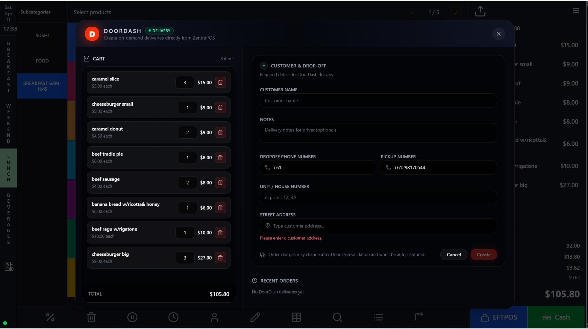
| Area / control | Detailed function |
|---|---|
| Cart overview | Shows exactly which items will be sent to DoorDash. |
| Customer & drop-off form | Collects the receiving customer's contact details. |
| Delivery notes field | Captures driver instructions or access details. |
| Phone fields | Separates drop-off and pickup numbers for operational communication. |
| Address entry | Validates the destination for dispatch. |
| Create button | Submits the delivery request once validation is complete. |
| Recent orders area | Keeps recent delivery activity visible to staff. |
Happy Hours provides a quick way to enable a temporary promotional discount across sales without editing product prices one by one. A toggle turns the mode on, and a slider sets the percentage.

| Area / control | Detailed function |
|---|---|
| Enable Happy Hours toggle | Turns the promotion mode on or off. |
| Discount value badge | Displays the currently configured percentage. |
| Slider | Adjusts the active discount interactively. |
| Save button | Commits the temporary pricing rule. |
Holding a cart pauses an in-progress order and stores it for later retrieval without losing items, totals, or contextual information. This is essential when customers step away or cannot pay immediately.
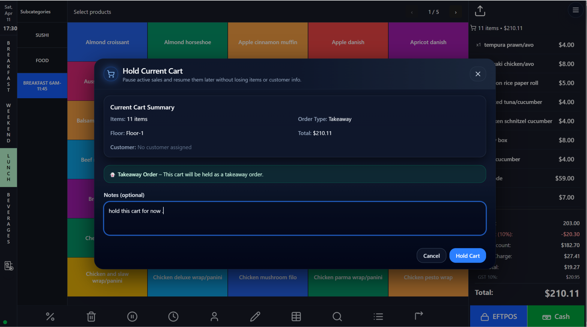
| Area / control | Detailed function |
|---|---|
| Cart summary | Shows items, order type, floor, customer assignment, and total before the hold is saved. |
| Takeaway notice | Explains the order context being preserved. |
| Notes field | Lets staff record why the cart is being held. |
| Hold Cart button | Stores the sale into held-cart storage for later recovery. |
The Held Carts list is the recovery center for paused sales. Each card gives enough detail for staff to identify the correct order and either resume, refresh, or delete it.
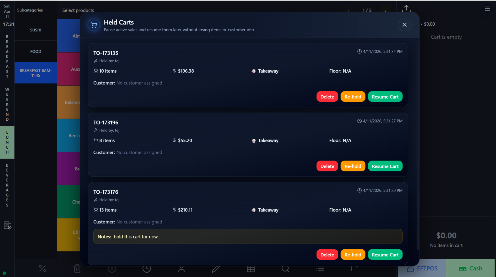
| Area / control | Detailed function |
|---|---|
| Held cart cards | Show hold number, operator, timestamp, item count, value, order type, floor, and notes. |
| Delete | Removes an unwanted held cart. |
| Re-hold | Refreshes or updates the hold state. |
| Resume Cart | Restores the held sale to the live ordering workflow. |
| Notes display | Preserves operational context entered at the time of hold. |
Kitchen Priority Hub is a production-management screen for urgent order handling. It groups orders by state, highlights priority jobs, supports kitchen notes, and helps kitchen or expo teams coordinate prep flow.

| Area / control | Detailed function |
|---|---|
| Search bar | Finds orders by order number or internal identifier. |
| Status counters | Summarize new, preparing, priority, and done orders. |
| Order cards | Display order number, priority level, table or order type, timestamp, and notes. |
| Kitchen note field | Allows kitchen or expo staff to add operational notes. |
| FIRED UP action | Likely acknowledges or advances an order into active preparation. |
This extended customer management view exposes the same profile area in a way that is suited to deeper review and maintenance. It is useful when staff need more than quick assignment and must manage full customer records.

| Area / control | Detailed function |
|---|---|
| Search and result pane | Finds customers and loads a matching profile without leaving the workspace. |
| Profile header badges | Shows VIP, hidden, and other profile labels that affect service decisions. |
| Address and contact data | Supports delivery follow-up, customer recognition, and data validation. |
| Points / Discount / Status cards | Summarize loyalty and entitlement information at a glance. |
| Sales history viewer | Provides a transaction trail for support, loyalty disputes, or VIP treatment. |
Day View shows reservations on a timeline for a selected date. It helps hosts and floor staff see table occupancy by time slot, inspect booking details, and perform immediate actions such as check-in, reschedule, cancel, or notification.

| Area / control | Detailed function |
|---|---|
| Timeline calendar | Displays reservations by hour so staff can visualize overlaps and gaps. |
| Upcoming reservations panel | Lists near-term bookings for quick access. |
| Booking search fields | Find reservations by booking reference or PIN. |
| Booking detail modal | Shows customer, phone, table, floor, party size, status, and booking times. |
| Action buttons | Support Reschedule, Cancel Reservation, Check In, and Send Notification. |
| Day / Week / Month controls | Switch between different reservation planning views. |
Online Checkout is the customer-facing final review and payment step for web orders. It summarizes order type, table number or delivery method, line items, tax, and the final amount before the user proceeds to payment.

| Area / control | Detailed function |
|---|---|
| Order Type selector | Lets the customer choose Delivery, Pickup, or Dine-in where supported. |
| Table number field | Required for dine-in or QR ordering flows that must attach the order to a table. |
| Order summary | Lists items, quantities, line totals, subtotal, tax, and final total. |
| Proceed to Payment button | Moves the customer into the payment gateway or final confirmation step. |
| Store footer details | Shows business contact information and service hours for reassurance. |
This is the public-facing digital menu used by customers to browse categories, search items, add products to cart, and begin an online order from mobile or desktop devices.

| Area / control | Detailed function |
|---|---|
| Category pills | Switch between public menu groups such as Top Picks, Breakfast, Weekend, Lunch, and Beverages. |
| Subcategory pills | Further narrow the active menu into smaller public-facing groups. |
| Search bar | Lets customers search for dishes without browsing the full menu. |
| Product cards | Show image, item name, short description, price, and add-to-cart action. |
| Cart indicator | Shows the live number of items in the customer's cart. |
| Promotional banner | Highlights featured campaigns, hours, or hero products. |
This customer-facing booking page allows guests to select a date, time, floor, and table before submitting a reservation. It combines booking inputs with venue details and available-table visibility.

| Area / control | Detailed function |
|---|---|
| Floor tabs | Switch available seating areas such as Floor-1, Outside, or Rooftop. |
| Pick Date & Time | Opens the reservation time-slot selector. |
| Booking form fields | Collect name, phone, email, party size, and special request information. |
| Table details panel | Shows selected table number, capacity, type, accessibility, and notable features. |
| Available tables grid | Visualizes bookable tables for the chosen date and time. |
| Feature notes | Can describe views, accessibility, QR ordering, or seating characteristics. |
Calendar View gives staff and managers a high-level monthly overview of reservation demand. It is best for spotting busy dates, reviewing future bookings, and planning staffing or marketing activity.
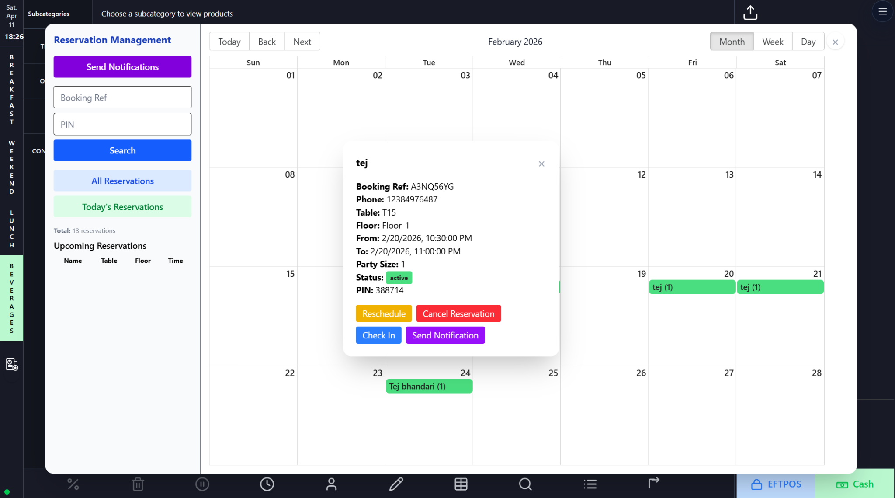
| Area / control | Detailed function |
|---|---|
| Month grid | Displays bookings by date across the selected month. |
| Date navigation | Lets staff move backward or forward through calendar periods. |
| Reservation detail modal | Shows selected booking details when a calendar entry is clicked. |
| All / Today filters | Help operators focus on the relevant reservation subset. |
| Notification controls | Support communication with customers from within the reservation workflow. |
This page centralizes web or guest-originated orders that still need action. Staff can inspect order details, load a web order into the POS cart, or process the order directly from the integration list.
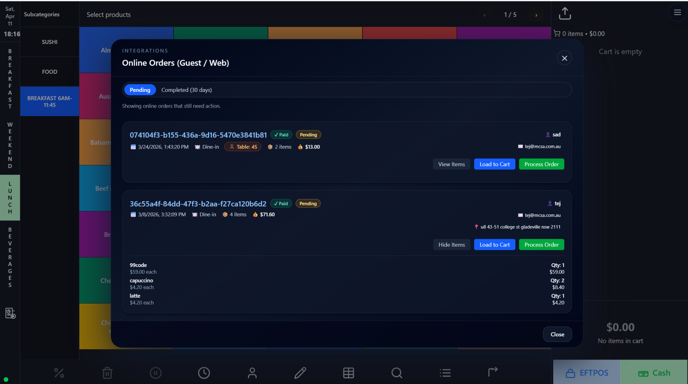
| Area / control | Detailed function |
|---|---|
| Pending / Completed tabs | Separate orders requiring action from historical orders. |
| Order cards | Display order ID, date/time, order type, table or address, item count, and total. |
| View Items / Hide Items | Expand or collapse the item-level detail for each online order. |
| Load to Cart | Pulls the online order into the live POS cart for in-store processing. |
| Process Order | Advances the order to the next operational stage. |
| Customer details | Shows the name, email, and destination context for validation. |
| Checkpoint | Why it matters |
|---|---|
| Before adding items | Verify the correct day-part, table, or order type is selected. |
| Before taking payment | Review subtotal, discounts, service charge, GST, and total. |
| Before assigning loyalty | Confirm the customer profile and any redeemable rewards. |
| Before using discount or Happy Hours | Check venue policy and required manager permissions. |
| Before refunding | Match the original sale, payment method, and exact quantities. |
| Before sending delivery orders | Validate customer name, phone, and address fields. |
| Before merging tables | Double-check the correct tables are selected to avoid billing confusion. |
| Before resuming a held cart | Confirm it belongs to the current customer to prevent cross-service mistakes. |
| Before firing priority kitchen work | Ensure order notes are clear and actionable. |
Site-specific configuration, permissions, integrations, tax rules, and naming may vary between tenants or locations. Pair this manual with venue-specific policy for refunds, promotions, service charges, reservations, and cash handling.